World of Booth
A small 3D city with a reason to explore. Walk, drive, and find photobooths that turn your webcam into a memory.
Solo Developer / 2 weeks / Personal Project
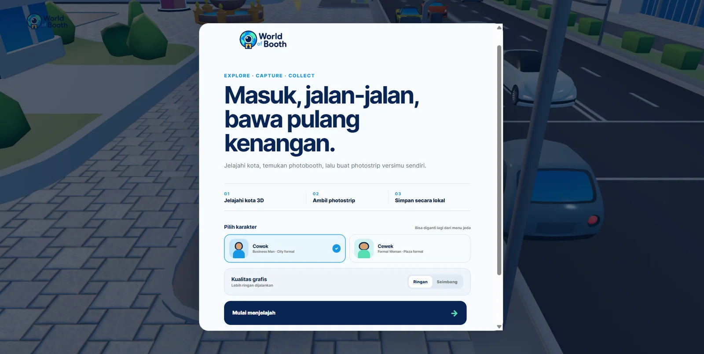
Fullstack developer. Selected work and project archive.
A small 3D city with a reason to explore. Walk, drive, and find photobooths that turn your webcam into a memory.
Solo Developer / 2 weeks / Personal Project

An analog camera lab in your browser. Eighteen film recipes, a custom image pipeline, and photos that stay yours.
Solo Developer / 2 weeks / Personal Project
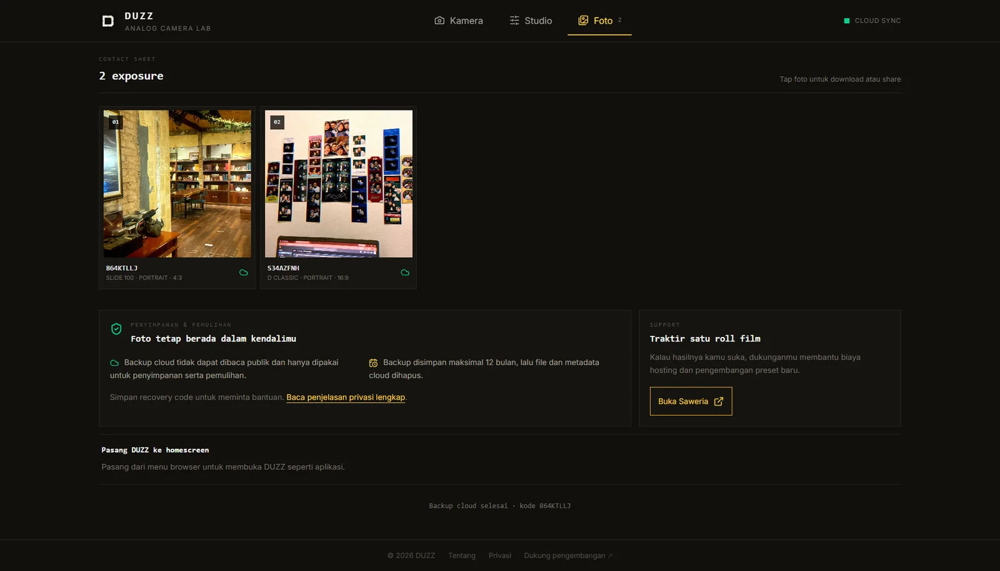
A connected world for pin collectors. Mobile scanning, custom park maps, trading, and a shared collection.
Fullstack Developer / 6 months / Collaborative Work
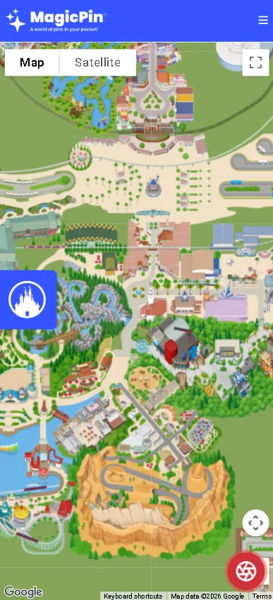
A GSMArena-style phone specifications portal designed for the Indonesian market. Built on Leaf MVC v4 (PHP 8.2+) with Eloquent ORM, this custom CMS features AJAX-powered autocomplete search, a dual-device specifications comparison engine, and a fully automated web scraper for GSMArena. The dashboard empowers administrators to manage devices, ad slots, and SEO metadata. Optimized for monetization and discoverability with Adsense slots, automated sitemaps, JSON-LD schema, and an integrated WordPress blog structure via .htaccess.
Fullstack Developer / 2.5 months / Client Work
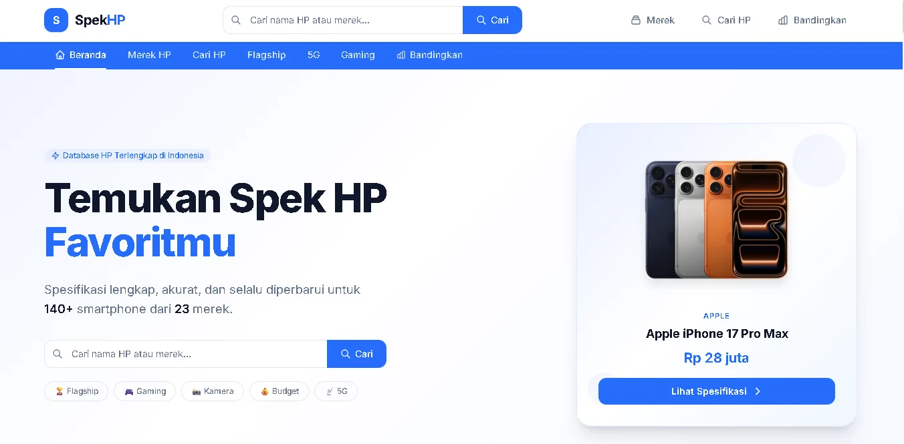
Connecting the roasting floor to inventory. A web and mobile system built around the work of coffee production.
Lead Developer / 3 months / Client Work
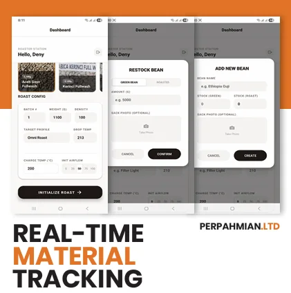
An interactive storefront inside a retro handheld console. A little nostalgia, running right in the browser.
Frontend Developer / 1.5 months / Client Work
A bridge between field teams and the office. Mobile data collection, geolocation, and an admin command center.
Fullstack Developer / 4 months / Client Work
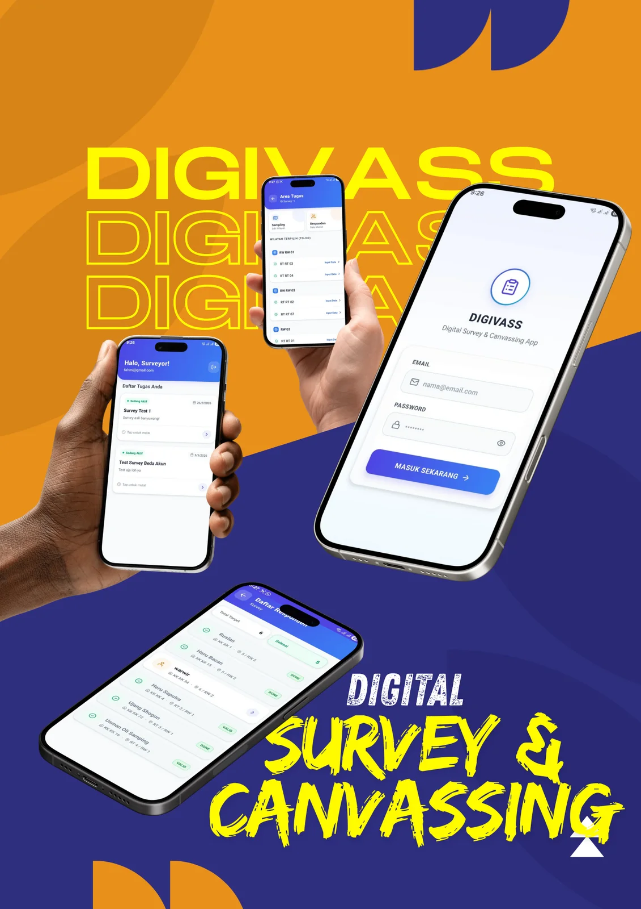
Synchronized classroom experience using Laravel & Inertia.js. Replaces heavy websockets with optimized REST strategies for a real-time practice environment.
Backend Developer / 2 months / Client Work
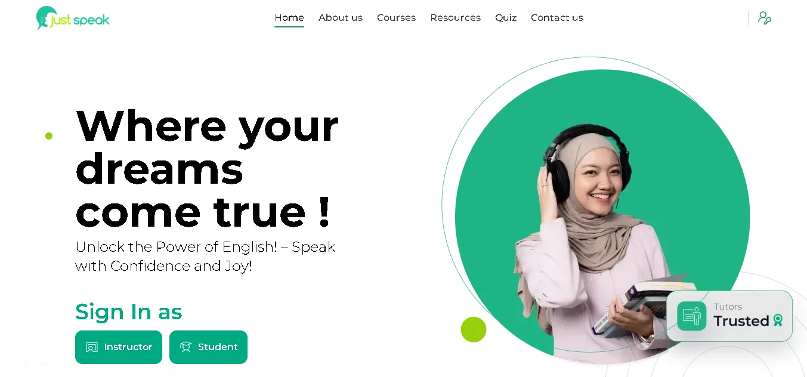
High-performance executive dashboard translating complex patient data into intuitive visual insights. Built with Next.js and optimized for data-heavy views.
Frontend Developer / 1 month / Client Work
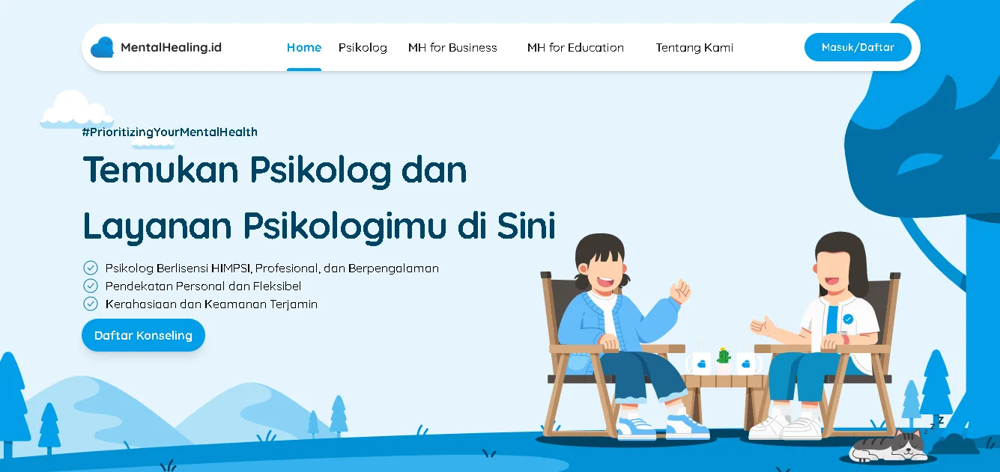
Lightning-fast Svelte app focused on technical SEO and immersive 360° VR visualizations (Panolens.js) for an architecture firm's portfolio showcase.
Frontend Developer / 3 weeks / Client Work
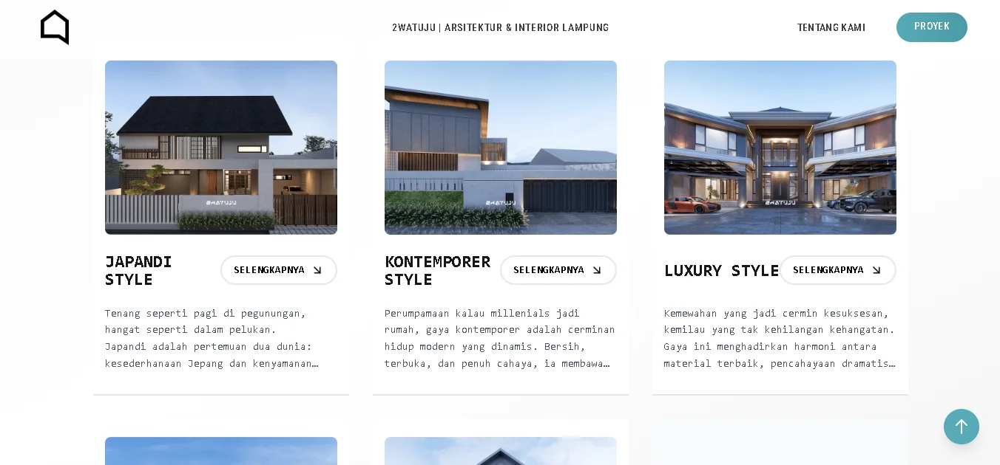
A futuristic collection of 10 playable browser games built with pure Vanilla JS, featuring glassmorphism UI and procedural music generation via Tone.js.
Solo Developer / 2 months / Personal Project
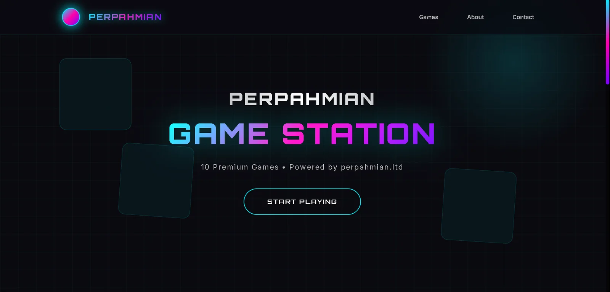
A fully dynamic corporate identity platform where every section is editable via a custom admin panel. Built on Supabase with real-time preview.
Fullstack Developer / 6 weeks / Client Work
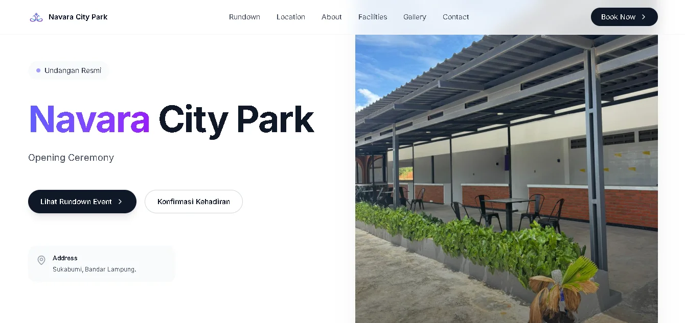
Smart digital invitation system with Google Sheets API integration to auto-generate personalized guest links and track RSVPs in real-time.
Fullstack Developer / 2 weeks / Client Work
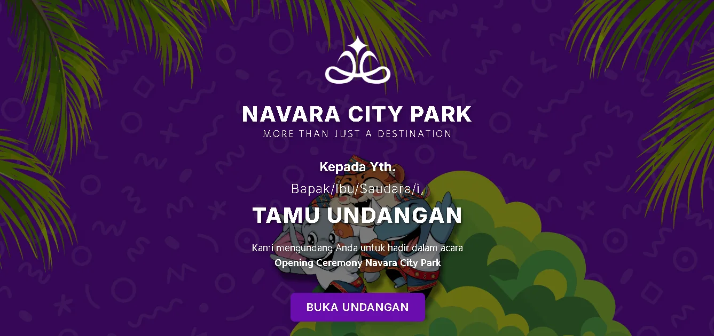
Full-featured exam simulator with token entry, auto-grading, and CSV reporting built on Supabase. Supports multiple question types including reading passages.
Fullstack Developer / 2 months / Personal Project
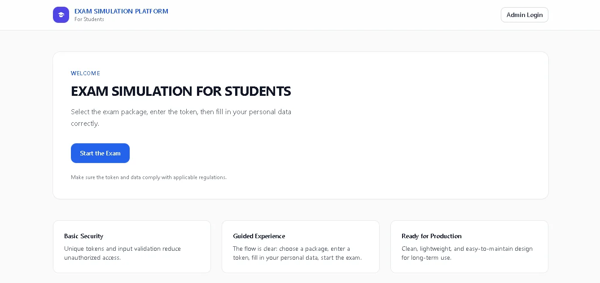
University job marketplace connecting students with companies using role-based access control. Built for Ciputra University's career development center.
Fullstack Developer / 3 months / Client Work
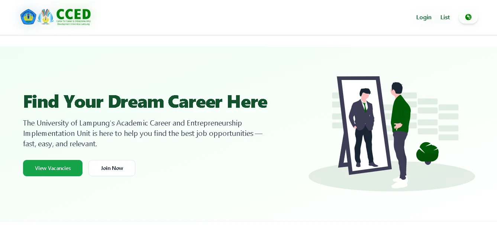
Multi-currency fee tracker and session manager handling complex timezone conversions and client billing. Built for personal use as a freelance productivity tool.
Solo Developer / 2 weeks / Personal Project
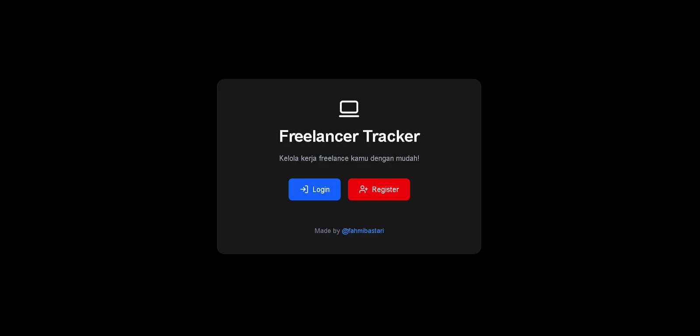
Digital waqf platform enabling transparent donation tracking and project management for Islamic social finance. Built with full audit trail and reporting.
Fullstack Developer / 2 months / Client Work
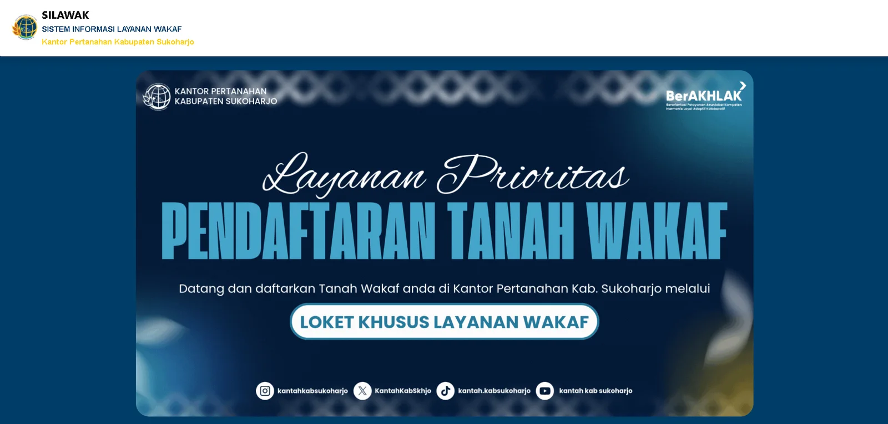
From the counter to the stockroom. A coffee shop workspace connecting orders, cashier shifts, ingredients, purchasing, expenses, and reporting.
Web application
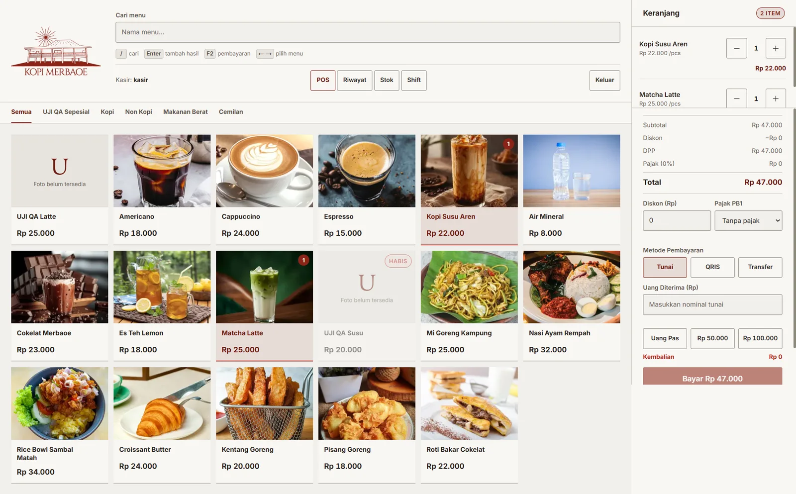
An enterprise-grade utility management ecosystem for water districts (PDAM). This 3-tier system bridges the gap between field operations and executive oversight. Features include an offline-first mobile app with AI-OCR and NFC validation, real-time GPS tracking for meter readers, and a robust web command center for revenue estimation, abnormal consumption analysis, and automated activity logging.
Project archive
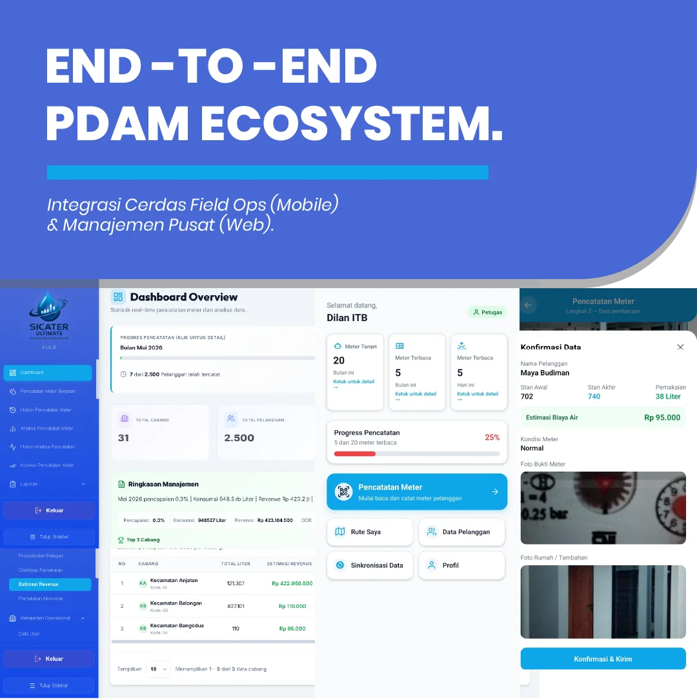